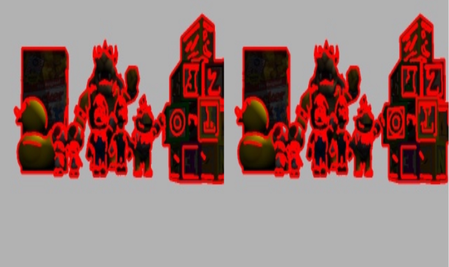
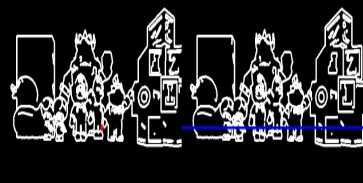
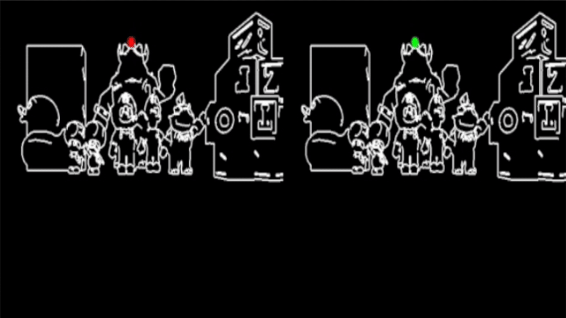

The 3D reconstruction process starts by detecting keypoints in the left image using the Canny edge detector.
This method provides a dense set of edge points, which are ideal candidates for stereo matching.
Once detected, half of the keypoints are randomly discarded to reduce computational load.
In each iteration of the algorithm, the 50 highest remaining points (i.e., with the lowest Y coordinates) in the left image are selected for processing.

Detected keypoints (red) using Canny edge detector
For each detected point in the left image, the algorithm computes its epipolar line in the right image through a geometric approach. The process begins by converting the 2D point from image (graphic) coordinates to optical coordinates, and then backprojecting it into 3D space. Using the resulting 3D point and the known position of the left camera, a viewing direction vector is computed. An additional point along this viewing ray is then selected to define the epipolar geometry. Both 3D points are projected onto the right camera's image plane, converted back into graphic coordinates, and used to define the slope and intercept of the epipolar line. This line guides the correspondence search in the right image.

Epipolar line in right camera (blue) for the selected point in left camera (red)
For each left-side keypoint, the algorithm searches for its best match along the epipolar line using a template matching strategy. A 11×11 pixel window is extracted around the keypoint in the left image and compared against candidate keypoints in the right image that lie near the epipolar line. Only keypoints previously detected in the right image are considered valid candidates, significantly reducing the search space and improving accuracy. Matching is evaluated using OpenCV's
cv2.matchTemplate, which computes a correlation score between the template and each candidate region.
The search is constrained to a predefined disparity range (typically 80 pixels to the left) to ensure realistic matches. If a match is found with a correlation score above a defined threshold, it is accepted as a valid correspondence. The matching is visually confirmed in real time using
GUI.showImageMatching, which draws lines between corresponding points in the stereo pair.

Template matching examples